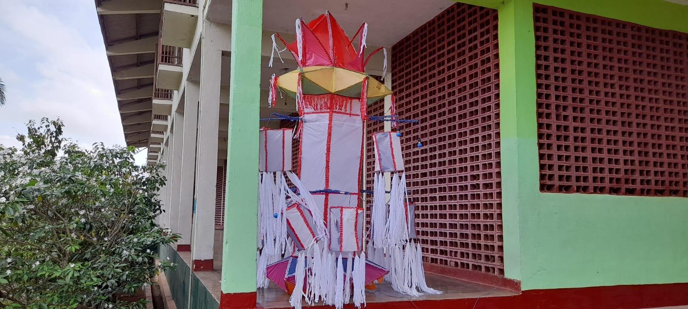

Empowering Youth Through Practical Skills

Our curriculum is centered on learning by doing. Students combine practical hands-on workshops with essential academic theory, English language competency, and computer literacy. This balanced approach ensures our graduates are not only technically proficient but also possess the soft skills required to succeed in the modern workplace.
| Trade Category | Key Training Focus | Practical Exposure |
|---|---|---|
| Automobile Technology | Engine repair, motor mechanics, vehicle maintenance & diagnostics. | Hands-on repair in on-campus automotive workshops. |
| Electrical & Electronics | Domestic wiring, motor winding, industrial electrical basics. | Real-world circuit design, installation, and troubleshooting. |
| Mechanical & Machining | Turning, fitting, welding, lathe operation, fabrication. | Engineering components and executing metalwork projects. |
| Carpentry & Woodwork | Furniture making, timber selection, power tool operation, finishing. | Crafting custom furniture for institutional use. |
| Agriculture & Farming | Crop cultivation, organic farming, livestock care, farm machinery. | Managing campus dairy, poultry, and vegetable gardens. |
| Life Skills & Languages | Basic English, computer fundamentals, ethics, team dynamics. | Daily structured sessions and residential leadership activities. |